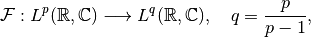
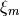

Fourier Transform¶
Background¶
Definition and basic properties¶
The Fourier Transform (FT) of a function  belonging to the Lebesgue Space
is defined as
belonging to the Lebesgue Space
is defined as
(1)¶
(Note that this definition differs from the one in the linked article by the placement of the
factor  .) By unique continuation, the bounded FT operator can be
extended to
for , yielding a mapping
.) By unique continuation, the bounded FT operator can be
extended to
for , yielding a mapping

where  is the conjugate exponent of
is the conjugate exponent of  (for one sets ).
Finite exponents larger than 2 also allow the extension of the operator but require the notion of
Distributions to characterize its range. See [SW1971] for further details.
(for one sets ).
Finite exponents larger than 2 also allow the extension of the operator but require the notion of
Distributions to characterize its range. See [SW1971] for further details.
The inverse of on its range is given by the formula
(2)¶
For  , the conjugate exponent is , and the FT is a unitary
operator on according to Parseval’s Identity
, the conjugate exponent is , and the FT is a unitary
operator on according to Parseval’s Identity

which implies that its adjoint is its inverse, .
Further Properties¶
(3)¶
The first identity implies in particular that for real-valued , it is
, i.e. the FT is
completely known already from the its values in a half-space only. This property is later exploited
to reduce storage.
In  dimensions, the FT is defined as
dimensions, the FT is defined as
with the usual inner product in . The identities (3) also hold in this case with obvious modifications.
Discretized Fourier Transform¶
General case¶
The approach taken in ODL for the discretization of the FT follows immediately from the way Discretizations are defined, but the original inspiration for it came from the book [Pre+2007], Section 13.9 “Computing Fourier Integrals Using the FFT”.
Discretization of the Fourier transform operator means evaluating the Fourier integral (1) on a discretized function
(4)¶
with coefficients and functions
. This approach follows from the way , but can be
We consider in particular functions generated from a single
kernel  via
via
where are sampling points and scaling factors. Using the shift and scaling properties in (3) yields
(5)¶
There exist methods for the fast approximation of such sums for a general choice of frequency samples , e.g. NFFT.
Regular grids¶
For regular grids
(6)¶
the evaluation of the integral can be written in the form which uses trigonometric sums as computed in FFTW or in Numpy:
(7)¶
Hence, the Fourier integral evaluation can be built around established libraries with simple pre- and post-processing steps.
With regular grids, the discretized integral (5) evaluated at , can be expanded to
To reach the form (7), the factor depending on both indices  and
and  must agree with the corresponding factor in the FFT sum. This is achieved by setting
must agree with the corresponding factor in the FFT sum. This is achieved by setting
(8)¶
finally yielding the representation
(9)¶
Choice of ¶
There is a certain degree of freedom in the choice of the most negative frequency .
Usually one wants to center the Fourier space grid around zero since most information is typically
concentrated there. Point-symmetric grids are the standard choice, however sometimes one explicitly
wants to include (for even  ) or exclude (for odd ) the zero frequency from the
grid, which is achieved by shifting the frequency by . This results in
two possible choices
) or exclude (for odd ) the zero frequency from the
grid, which is achieved by shifting the frequency by . This results in
two possible choices
For the shifted frequency, the pre-processing factor in the sum in (9) can be simplified to
which is favorable for real-valued input since this first operation preserves this property. For half-complex transforms, shifting is required.
The factor  ¶
¶
In (9), the FT of the kernel appears as post-processing factor.
We give the explicit formulas for the two standard discretizations currently used in ODL, which
are nearest neighbor interpolation
and linear interpolation
Their Fourier transforms are given by
Since their arguments lie between and  ,
these functions introduce only a slight taper towards higher frequencies given the fact that the
first zeros lie at
,
these functions introduce only a slight taper towards higher frequencies given the fact that the
first zeros lie at  .
.
Inverse transform¶
According to (2), the inverse of the continuous Fourier transform is given by
the same formula as the forward transform (1), except for a switched sign in the
complex exponential. Hence, this operator can rather be viewed as a variation of the forward FT,
and it is implemented via a sign parameter in FourierTransform.
The inverse of the discretized formula (9) is instead gained directly using the identity
(10)¶
By dividing (9) with the factor
before the sum, multiplying with the exponential factor and
summing over , the coefficients  can be recovered:
can be recovered:
Hence, the inversion formula for the discretized FT reads as
(11)¶
which can be calculated in the same manner as the forward FT, basically by switching the roles of pre- and post-processing steps and flipping the sign in the complex exponentials.
Adjoint operator¶
If the FT is defined between the complex Hilbert spaces , one can easily show that the operator is unitary, and therefore its adjoint is equal to the inverse.
However, if the domain is a real space, , one cannot even speak of a linear operator since the property
cannot be tested for all as required by the right-hand side, since on the left-hand side, needs to be real. This issue can be remedied by identifying the real and imaginary parts in the range with components of a product space element:
where and are the sine and cosine transforms, respectively. Those two operators are self-adjoint between real Hilbert spaces, and thus the adjoint of the above defined transform is given by
If we compare this result to the “naive” approach of taking the real part of the inverse of the complex inverse transform, we get
Hence, by identifying and , we see that the result is the same. Therefore, using the naive approach for the adjoint operator is justified by this argument.